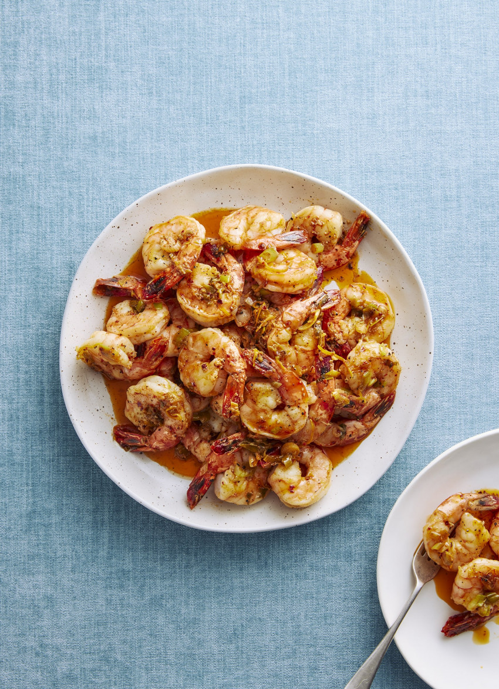

Smoky Garlic and Chilli Prawns

Description
Finger-lickin’ Smoky Garlic and Chilli Prawns
Ingerdients
- ⅓ cup olive oil
- 20 large, peeled raw prawns, tails on
- 4 cloves garlic, crushed
- 2 teaspoons smoked paprika
- 1 teaspoon chilli flakes, or more for a spicier version
- grated zest and juice 1 large lemon
- 2 tablespoons butter
- 2 spring onions, thinly sliced
- sea salt and ground pepper
Steps
- Heat the oil in a large frying pan over a high heat. Add the prawns and cook for 2-3 minutes, until just cooked and lightly golden. Transfer to a plate using a slotted spoon. Don’t wash the pan.
- Add the garlic, paprika and chilli to the pan and cook for 1 minute. Stir in the lemon zest and juice, butter and spring onions and cook for 1 minute, then add the prawns along with any juices. Season with salt and pepper and turn the prawns so they are well coated in the sauce.
- Tip into a large serving bowl and serve immediately.